SpatialSV：通过任务导向视觉监督让 MLLM 内化可解释三维空间意识SpatialSV: Internalizing Interpretable 3D Spatial Awareness in MLLMs via Task-Oriented Visual Supervision
不是定位/建图系统，但与三维几何监督、空间表示和机器人空间推理相关；适合作为 MLLM/VLA 空间智能外围跟踪。
一句话工作总结
SpatialSV 用 depth、camera pose 和 point cloud 等任务监督训练 MLLM 的 2D-to-3D lifting，使其空间表示更可解释。
摘要
解锁 multimodal large language model（MLLM）的空间智能，是理解和交互三维世界的关键。现有方法通常通过外部工具注入空间先验，带来显著推理开销；或依赖 latent feature distillation，但难以解释且缺少细粒度几何约束。本文提出 SpatialSV，旨在把鲁棒三维空间意识内化到 MLLM 中，同时提供内在可解释性。不同于被动特征模仿，SpatialSV 使用任务导向视觉监督，迫使模型主动将 2D visual features 提升为显式 3D representations，包括 depth maps、camera poses 和 point clouds。该 2D-to-3D lifting 过程为模型表示提供透明窗口：生成的三维重建可作为直观 proxy，用于可视化和诊断模型内在空间知识质量。多个模型和 benchmark 实验显示 SpatialSV 能增强并解释 MLLM 空间智能；其在半监督设置下也具备强泛化能力，显示可利用未标注视觉数据进行可扩展、可解释的空间表示学习。
Unlocking the spatial intelligence of multimodal large language model (MLLMs) is crucial for understanding and interacting with the 3D world. Prevailing approaches typically inject spatial priors via external tools, which impose significant inference overhead, or rely on latent feature distillation, which remains uninterpretable and lacks fine-grained geometric constraints. To address these issues, we propose SpatialSV, a framework designed to internalize robust 3D spatial awareness within MLLMs while simultaneously offering inherent interpretability. Deviating from passive feature imitation, SpatialSV employs task-oriented visual supervision, compelling the model to actively lift its 2D visual features into explicit 3D representations, including depth maps, camera poses, and point clouds. Crucially, this 2D-to-3D lifting process provides a transparent window into the model's representations: the resulting 3D reconstructions serve as an intuitive proxy for visualizing and diagnosing the quality of the model's intrinsic spatial knowledge. Extensive experiments across multiple models and benchmarks demonstrate the effectiveness of SpatialSV in enhancing and interpreting MLLMs' spatial intelligence. Furthermore, the framework exhibits strong generalization in semi-supervised settings, validating its potential to leverage unlabeled visual data for scalable, interpretable spatial representation learning.
中文解读摘录
- 链接：abs / PDF；作者：Jiayu Tang, Yuchen Zhou, Chao Gou；类别：cs.CV；备注：IJCAI 2026；采集 score=4。
- 核心思路：让 MLLM 通过任务导向视觉监督显式学习 2D-to-3D lifting，输出 depth maps、camera poses 和 point clouds，从而内化可解释的 3D spatial awareness。
- 与用户方向的关系：不是 SLAM 算法，但其 supervision targets 与三维视觉/位姿/点云高度相关；可作为“空间智能模型如何借助可解释几何任务训练”的外围跟踪。
- 关注点：建议关注其 camera pose / depth / point cloud 监督的标注来源、半监督泛化能力，以及是否能为机器人 VLA/VLN 的空间记忆或几何推理提供先验。
图表/页面预览
{kind=link}
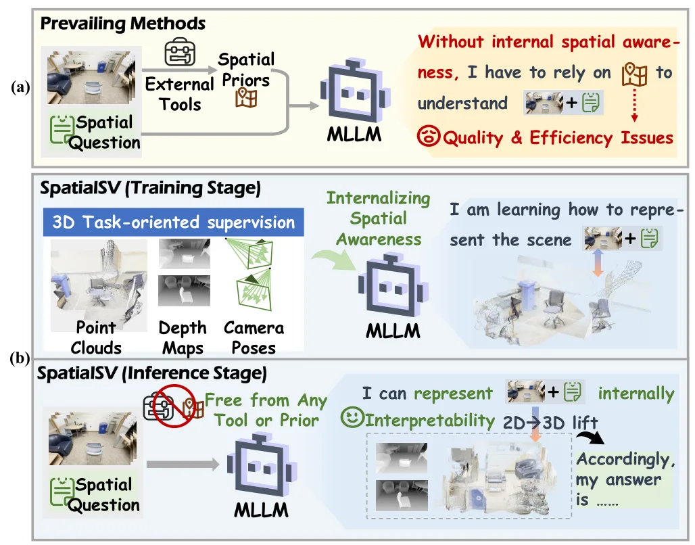
{kind=link}
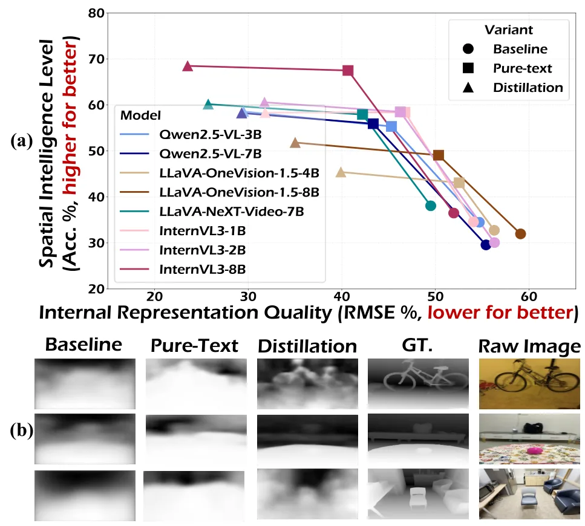
{kind=link}
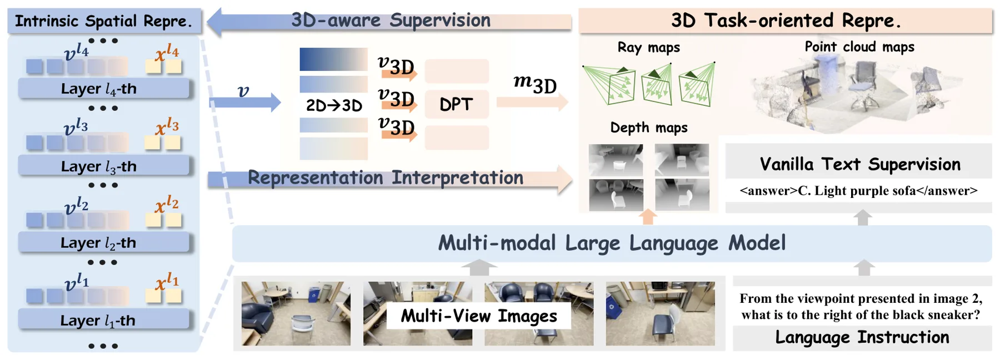
{kind=link}
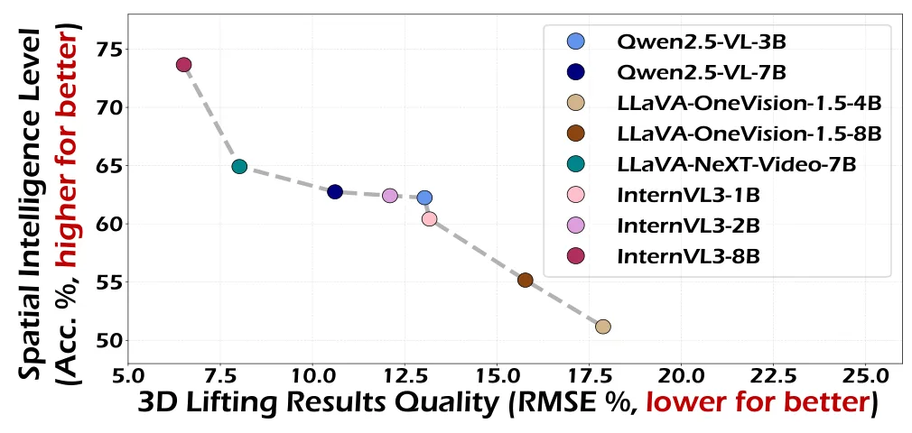
{kind=link}
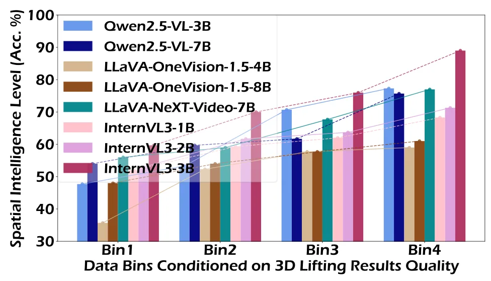
{kind=link}
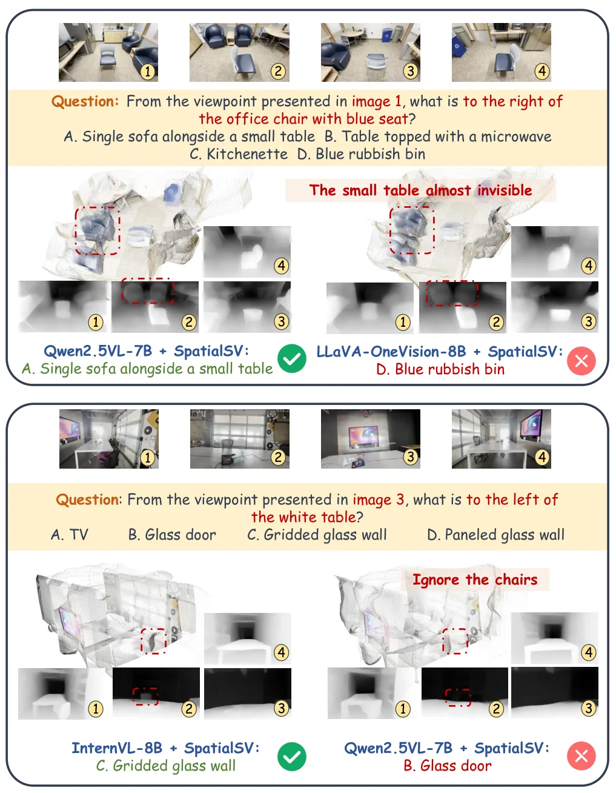
{kind=link}
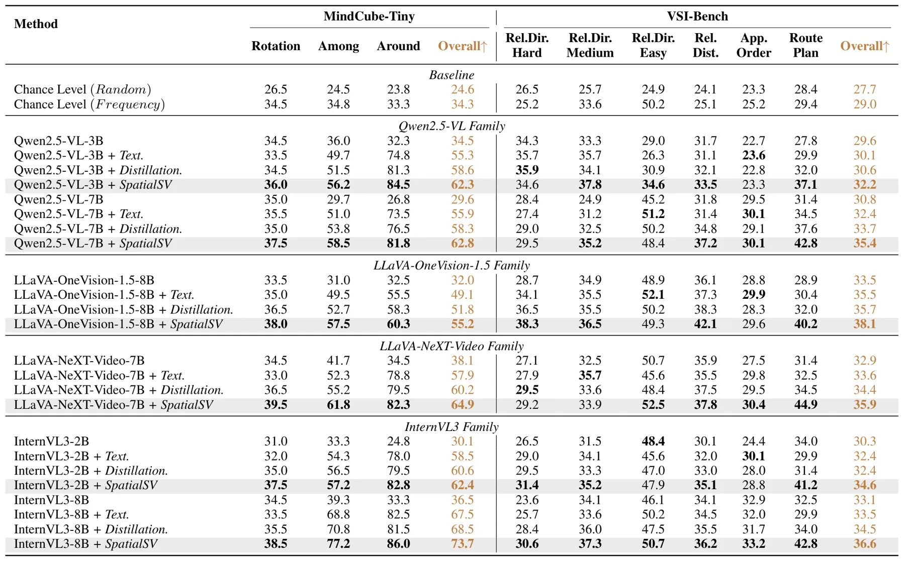
{kind=link}
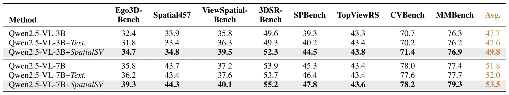
{kind=link}
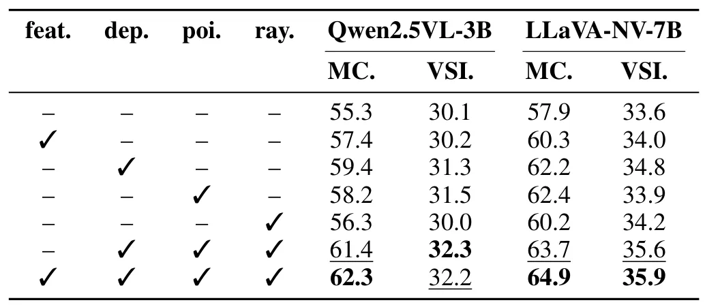
{kind=link}
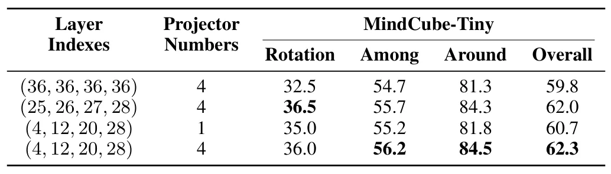
{kind=link}
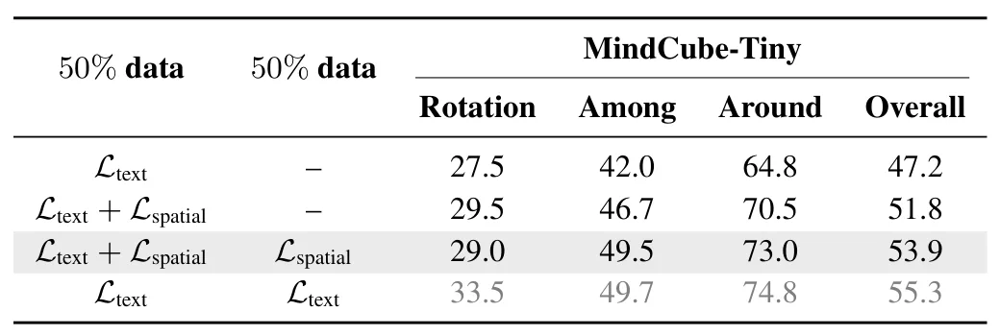